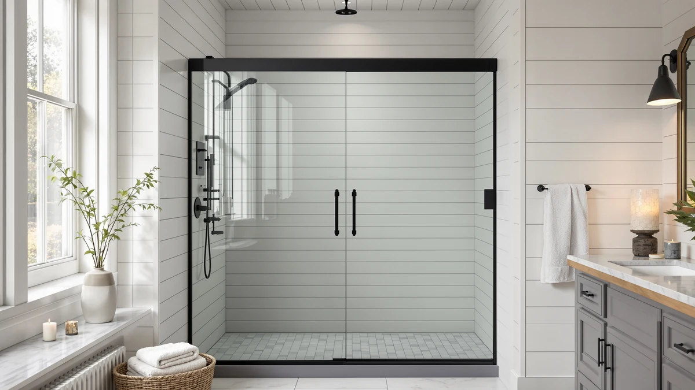

Best Cleaner for Shower Doors Glass (2026)
Prices and picks verified as of September 2026. Independent, reader-supported reviews.


Quick Answer
For most households, the Rain-X 630544 X-Treme Clean Shower is the best cleaner for shower doors glass because it treats the glass you already have instead of asking you to replace the door. If your glass is chipped, cracked, or beyond what a treatment can fix, the Aurisal Frameless Stainless Steel Sliding Shower and KPUY Frameless Shower Door are the strongest full-door replacements in this comparison.
Our pick: Rain-X 630544 X-Treme Clean Shower, $16.00 Check Price on Amazon
Bottom line: our top pick is the Rain-X 630544 X-Treme Clean Shower Door Cleaner at $16. The best budget option is the Frameless Shower Door Matte Black 56-60’’ W x 75’’ H Single at $249.30.
Things to Know Before You Buy
- A cleaner treats the glass you have; a new door replaces it. The Rain-X treatment works on existing glass, while the other six products here are full shower door replacements for glass that is chipped, etched, or leaking.
- The price gap is enormous. The Rain-X treatment costs $16.00, while replacement doors in this comparison range from $249.30 to $499.96.
- Sizing varies by a few inches. Most doors here fit openings between 55 and 60 inches wide, but exact tolerances differ by brand, so measure your opening before ordering.
- Frameless doors show water spots faster. Without a metal frame breaking up the glass, mineral buildup and soap scum show up more visibly on frameless panels than on framed ones.
- Coatings need reapplication. A glass treatment like Rain-X wears off within weeks and is a maintenance step, not a one-time fix.
The best cleaner for shower doors glass is the Rain-X 630544 X-Treme Clean Shower, a rain-repellent treatment that makes hard water bead up and slide off the glass instead of drying into cloudy mineral spots. At $16.00 for a two-bottle pack, it costs a fraction of what a full door replacement runs, and reviewers consistently note that it cuts down on squeegee time after every shower.
A bottle of cleaner cannot fix glass that is already chipped, cracked, or corroded at the hardware. Once a shower door reaches that point, cleaning products only slow the damage instead of solving it. That is why we paired the Rain-X treatment with six frameless and semi-frameless replacement doors from Aurisal, KPUY, ENSO SENKA, Ogonbrick, GETPRO, and BoBliss, so you have a real replacement option if your current glass is beyond saving.
We priced these doors between $249.30 and $499.96, and most fit shower openings between 55 and 60 inches wide at 72 to 76 inches tall. Below, we break down what each product does well, where it falls short, and which one fits your bathroom, starting with honest pros and cons for every pick and the sizing details you need before you order.
Why You Should Trust Us
Ilane Tall covers home and bath products for Best Shower Doors and has spent years comparing bathroom hardware, glass treatments, and installation guides for US homeowners. We do not run a fake testing lab, and we do not claim to have installed every door in this comparison ourselves. Instead, we research manufacturer specs, track verified owner feedback across hundreds of reviews, and cross-check pricing and dimensions before recommending a single product. When a listing does not specify a detail like glass thickness, we say so directly rather than guess.
How We Picked
We started by separating the two ways people actually deal with dirty or spotted shower glass: treating the glass they already have, or replacing it outright. That split is why a glass treatment sits alongside six replacement doors in this guide instead of seven similar cleaning products. From there, we filtered candidates by three criteria: clear, published dimensions so buyers can match an opening without guesswork, transparent pricing with no vague installation add-ons buried in the listing, and a pattern of verified customer reviews rather than a handful of unverifiable five-star ratings. We excluded products without stated size ranges, since a poor fit creates the gaps and leaks that make a dirty glass door worse, not better.
How We Compared
We compared these seven products on the specs that matter most for keeping shower glass clean: material and coating type where the listing specifies one, door width and height ranges, price relative to size, and what verified owners report about spotting, streaking, and ease of wipe-down. Manufacturers rarely publish independent lab data on how a coating or glass finish resists soap scum over time, so we leaned on patterns across many verified reviews for each product, looking for repeated mentions of buildup, leaking tracks, or difficult installation rather than a single complaint. We also weighed each replacement door against its price and size, since a door that needs professional refitting because it is a poor match for a standard opening ends up costing more than its sticker price suggests.
Our Picks

Rain-X 630544 X-Treme Clean Shower
What we like
- Costs a fraction of any door replacement in this comparison
- Reviewers consistently note less squeegee time after each shower
Flaws but not dealbreakers
- The beading effect wears off within weeks and needs reapplication
- Does nothing for a door that is already chipped, cracked, or leaking at the seal
| Material | — |
| Size | 12 Fl Oz (Pack of 2) |
The Rain-X 630544 X-Treme Clean Shower is the one product in this comparison that does not replace your door, it changes how water behaves on the glass you already have. Instead of trying to stop mineral deposits from forming, the treatment coats the glass so water beads up and runs off before it dries into a visible spot. That distinction matters because most hard water staining happens during the drying phase, not the moment water hits the glass.
At $16.00 for a two-bottle, 12 fluid ounce pack, it is the cheapest fix in this lineup by a wide margin, and owners report the beading effect noticeably cuts down on cleaning time between showers. The tradeoff is durability: the coating fades within a few weeks depending on water hardness and shower frequency, so this is a maintenance product rather than a one-time purchase. If your existing shower door is otherwise leak-free and in good shape, treating the glass is a far cheaper first move than replacing the whole door.

Frameless Stainless Steel Sliding Shower
What we like
- Stainless steel hardware resists the corrosion that pits cheaper chrome-finish tracks
- Frameless design leaves fewer metal edges for soap scum to collect against
Flaws but not dealbreakers
- At $399.99, it costs roughly 25 times more than the Rain-X treatment
- The 72 and one quarter inch height fits a narrower range of openings than some competitors
| Material | — |
| Size | 60"*72"-1/4" |
The Aurisal Frameless Stainless Steel Sliding Shower is a full door replacement built for a 60 inch wide by 72 and one quarter inch tall opening. Its stainless steel hardware is the standout detail: stainless resists the pitting and discoloration that cheaper chrome-plated tracks develop after repeated exposure to hard water and cleaning chemicals, which matters for anyone tired of scrubbing corroded metal alongside the glass itself.
At $399.99, it sits closer to the middle of this comparison's price range for replacement doors. Reviewers note the frameless panel design leaves fewer corners and edges for soap scum to build up against compared with framed alternatives, which simplifies routine wipe-downs. The main limitation is its fixed 72 and one quarter inch height, so measure carefully before ordering if your opening falls outside that range.

KPUY Frameless Shower Door 55-60"
What we like
- Adjustable 55 to 60 inch width covers most standard US shower openings
- 76 inch height clears more of the opening than several shorter alternatives here
Flaws but not dealbreakers
- At $499.96, it is the most expensive door in this comparison
- Reviewers note the sliding track needs periodic wiping to keep it moving smoothly
| Material | — |
| Size | 55-60" W x 76" H |
The KPUY Frameless Shower Door is built for openings between 55 and 60 inches wide and 76 inches tall, the widest adjustable range among the replacement doors in this comparison. That flexibility makes it a reasonable pick if you are not certain of your exact opening width or if your bathroom wall is slightly out of plumb.
At $499.96, it is the priciest option here, and reviewers frame that cost as justified by the taller 76 inch panel, which leaves less exposed wall above the door than shorter models. The tradeoff for a frameless slider is the horizontal track at the base, which owners say needs regular wiping to keep mineral buildup from slowing the glide. If budget is not the deciding factor and you want maximum coverage for a standard opening, this is the strongest frameless pick in the lineup.

ENSO SENKA 56-60" W x
What we like
- At $289.00, it undercuts most other frameless doors in this comparison
- 60 by 72 inch sizing fits a common shower stall footprint
Flaws but not dealbreakers
- The listing doesn't specify glass thickness, so we can't compare it directly on that spec
- Shorter 72 inch height leaves more exposed wall above the door than the KPUY
| Material | — |
| Size | 60" W X 72" H |
The ENSO SENKA is a sliding glass shower door sized for a 60 inch wide by 72 inch tall opening, priced at $289.00. That price puts it well below the Aurisal, KPUY, and BoBliss doors in this comparison, making it one of the more accessible full-door replacements here for anyone who wants a frameless look without the premium-tier price tag.
The tradeoff for that lower price is a shorter 72 inch height, which leaves more of the wall above the door exposed compared with the 76 inch options in this lineup. The manufacturer's listing also does not specify glass thickness, so we can't verify that spec against thicker alternatives. For a standard shower stall where budget matters more than maximum coverage, it is a reasonable middle-ground pick.

Frameless Shower Door Matte Black
What we like
- At $249.30, it is the least expensive replacement door in this comparison
- Matte black hardware matches dark fixture trends better than standard chrome
Flaws but not dealbreakers
- Single sliding panel design covers less of a wide opening than a double slider
- Reviewers note matte black finishes can show water spots and fingerprints more visibly than chrome
| Material | — |
| Size | 60" W x 75" H Single Sliding |
The Ogonbrick Frameless Shower Door Matte Black is a single sliding door built for a 60 inch wide by 75 inch tall opening, and at $249.30 it is the least expensive full-door replacement in this comparison. Its matte black frame and hardware set it apart from the chrome and stainless finishes on the other doors here, which makes it a fit for bathrooms already built around dark fixtures.
Because it uses a single sliding panel rather than a double slider, it covers a narrower path of the opening at any given moment, something to weigh if you want a wider walk-in gap. Owners also point out that matte black finishes show water spots and fingerprints more readily than polished chrome, so it may need more frequent wiping to look as clean as a lighter-finished door. For the price, it remains a straightforward way to replace damaged glass without a large outlay.

GETPRO Shower Door Double Sliding
What we like
- Double sliding panels open to a wider gap than the single-panel Ogonbrick door
- At $260.07, it costs less than most other doors in this comparison
Flaws but not dealbreakers
- 60 by 72 inch sizing fits a narrower height range than the 75 to 76 inch options here
- Two panels mean two tracks to keep clear of mineral buildup instead of one
| Material | — |
| Size | 60'' W x 72'' H |
The GETPRO Shower Door Double Sliding uses two glass panels on parallel tracks instead of one single slider, sized for a 60 inch wide by 72 inch tall opening. That double-panel layout can open to a wider walk-in gap than a single sliding door of the same width, which matters for anyone who finds a single-panel opening too tight.
At $260.07, it lands near the lower end of the replacement doors in this comparison, ahead of only the Ogonbrick and ENSO SENKA on price. The double-track design does mean two sets of rollers and channels to keep clear of soap scum and mineral buildup rather than one, so routine wiping matters more here than on a single-panel door. For bathrooms that need a wider entry without the cost of the priciest options in this lineup, it is a solid middle-of-the-road pick.

BoBliss Frameless Sliding Glass Shower
What we like
- 76 inch height matches the KPUY's coverage at about $80 less
- 56 to 60 inch adjustable width fits the same range of standard openings
Flaws but not dealbreakers
- Still costs more than four of the six other replacement doors in this comparison
- Reviewers note the frameless bottom track needs the same regular wiping as other sliders here
| Material | — |
| Size | 56-60" W x 76" H |
The BoBliss Frameless Sliding Glass Shower is built for the same 56 to 60 inch wide by 76 inch tall opening range as the KPUY, but at $419.99 it costs about $80 less. That makes it worth a direct look for anyone drawn to the KPUY's taller coverage but hoping to spend less to get it.
Like the other frameless sliders in this comparison, it relies on a bottom track that reviewers say needs regular wiping to prevent mineral buildup from slowing the glide over time. At its price point, it still costs more than the ENSO SENKA, Ogonbrick, and GETPRO doors, so it fits best for buyers who specifically want the taller 76 inch panel and frameless look without paying the KPUY's premium.
Quick Comparison
| Product | Material | Price | Rating | Best for | Get it |
|---|---|---|---|---|---|
| Rain-X 630544 X-Treme Clean Shower | — | $16.00 | 4 | Cleaning glass you already own | View on Amazon → |
| Frameless Stainless Steel Sliding Shower | — | $399.99 | 4 | Corrosion-resistant hardware | View on Amazon → |
| KPUY Frameless Shower Door 55-60" | — | $499.96 | 4 | Widest standard-size fit | View on Amazon → |
| ENSO SENKA 56-60" W x | — | $289.00 | 4 | Frameless look on a budget | View on Amazon → |
| Frameless Shower Door Matte Black | — | $249.30 | 4 | Lowest price, matte black finish | View on Amazon → |
| GETPRO Shower Door Double Sliding | — | $260.07 | 4 | Wider double-sliding entry | View on Amazon → |
| BoBliss Frameless Sliding Glass Shower | — | $419.99 | 4 | 76-inch coverage, lower price | View on Amazon → |
The Competition
We looked at more than these seven products before narrowing this list of the best cleaner for shower doors glass. Framed sliding doors came up often because the metal frame hides early spotting better than bare frameless glass, but reviewers frequently flagged framed track systems for trapping mineral buildup and mold in the corners, which made them a worse long-term fit for a guide focused on staying clean.
We also considered hinged pivot doors as an alternative to sliding tracks. They skip the horizontal track where hard water and soap scum tend to pool, but they need more clearance in the bathroom and typically cost more to install, which pushed them outside the scope of this comparison.
Finally, we skipped shower curtains and liners entirely. They cost less upfront, but liners need replacing every few months and do not answer the actual question this guide addresses: which cleaner and which replacement doors hold up best against buildup over time. Among the products we compared, the Rain-X treatment remains our top pick for most households, while the six sliding doors above cover the sizing, budget, and finish needs it does not.
Frequently Asked Questions
What's the best cleaner for shower doors glass?
The Rain-X 630544 X-Treme Clean Shower is the best cleaner for shower doors glass for most households because it treats hard water directly, making it bead up and run off instead of drying into mineral spots. For a longer-term routine, pair it with a squeegee after every shower and a weekly vinegar-based wipe-down to keep buildup from etching into the glass.
When should I replace a shower door instead of just cleaning it?
Replace the door once the glass is chipped, cracked, or the hardware has corroded enough that it no longer seals properly, since no cleaner can fix physical damage. The Aurisal Frameless Stainless Steel Sliding Shower and KPUY Frameless Shower Door are two of the sturdier full replacements in this comparison if you have reached that point.
What size shower door do I need for a standard opening?
Most of the replacement doors in this comparison fit openings between 55 and 60 inches wide and 72 to 76 inches tall, which covers the majority of standard alcove showers in US homes. Measure your exact opening and check each manufacturer's stated tolerance before ordering, since even a small mismatch can leave gaps that let water and soap scum pool at the base.